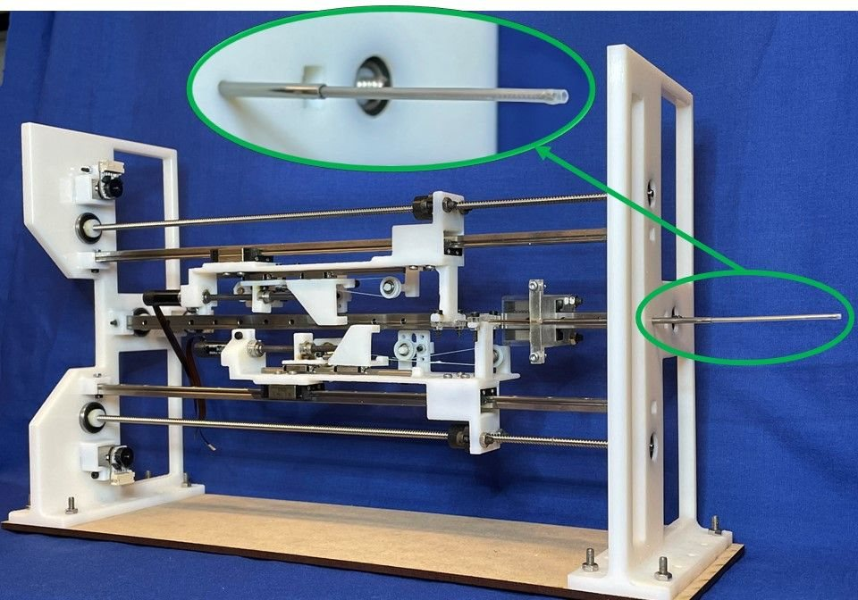
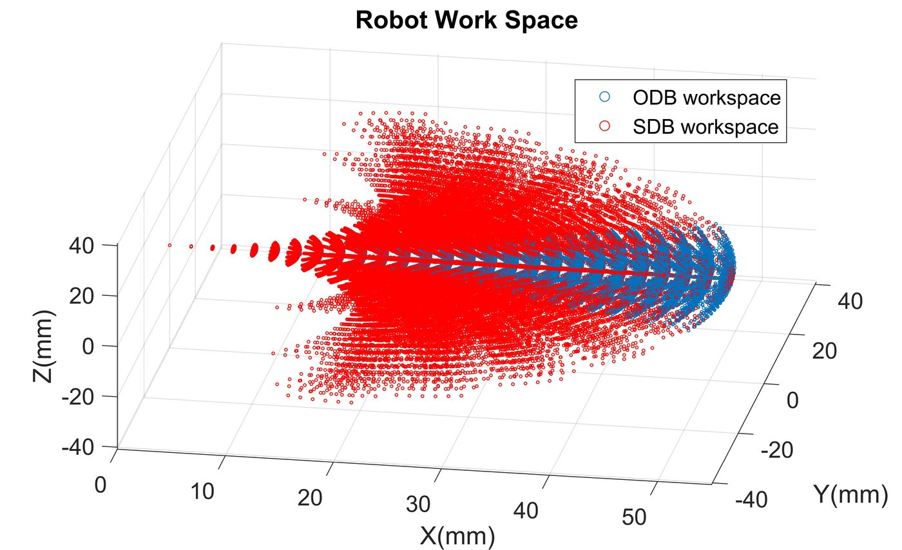

Dexterous Telescopic Tendon-Driven Needle Robot
NitinolSeries Elastic Actuation
Follow-the-LeaderNeurosurgery
Objective: a meso-scale, multi-stage robotic needle capable of Follow-the-Leader (FTL) navigation to minimize tissue damage during neurosurgery.
Technology: a concentric-tube manipulator built from notched superelastic nitinol tubes, driven by Series Elastic Actuators (SEAs) for precise force control.
Impact: sub-millimeter precision with a tip position error of 0.92 mm, and validated “S” and “C” shape maneuvers with ~1.1 mm FTL tracking error.
My role: mechanical design & prototyping · software & control · kinematic modeling and design constraints · experimental validation

